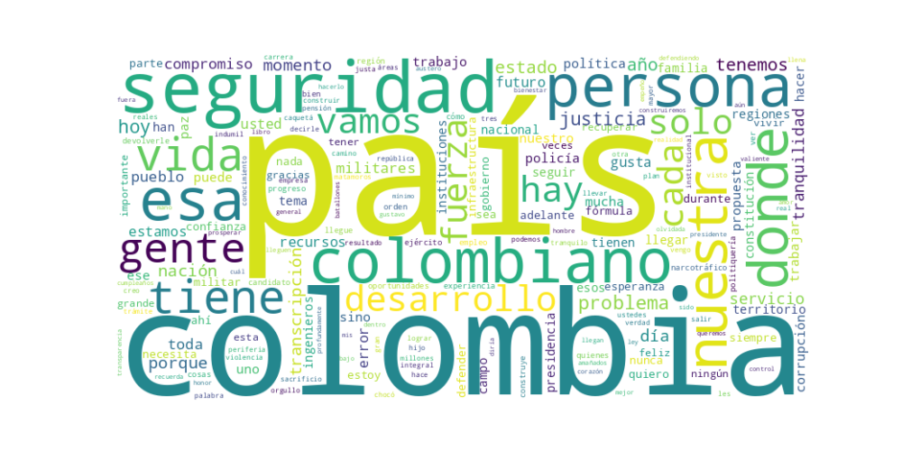

Seguidores: 1,860
Reporte de Análisis de Comunicación del Candidato Gustavo Matamoros
1. Perfil de Comunicación: El candidato Gustavo Matamoros emplea un estilo de comunicación directo y con fuerte impronta personal. Su discurso oscila entre un tono formal cuando aborda propuestas de gobierno o principios institucionales, y un tono más íntimo y familiar cuando habla de su vida, su servicio militar o su familia. Utiliza un lenguaje predominantemente popular y accesible, evitando terminología técnica compleja. Se proyecta como una figura cercana y empática ("hablar con la gente, mirarla a los ojos"), pero también como una autoridad firme y experimentada ("yo sé cómo hacerlo"). Esta dualidad busca combinar la cercanía emocional con la autoridad técnica.
2. Temas Principales: 1. Seguridad y Orden: Es el eje central de su discurso. Lo vincula inseparablemente al desarrollo y presenta su experiencia militar como solución. Ejemplo: "La seguridad es la primera ley de la República... Por eso estoy proponiendo una estrategia clara... para devolver la tranquilidad". 2. Desarrollo Regional (Estado Presente): Aborda la marginalización de las regiones periféricas como "Colombia olvidada". Propone una "Presencia Integral del Estado" combinando fuerzas militares (especialmente batallones de ingenieros) con infraestructura, empleo y oportunidades. Ejemplo: "Mi plan es claro: seguridad con desarrollo y desarrollo con seguridad, para que las regiones tengan por fin lo mínimo". 3. Anti-Corrupción y Austeridad: Promueve un gobierno austero y "tolerancia cero" con la corrupción y la "politiquería". Enfatiza la transparencia y el manejo eficiente de recursos. Ejemplo: "Mi compromiso es claro: tolerancia cero con la politiquería y los contratos amañados". 4. Unidad Nacional y Lucha contra el Narcotráfico: Critica la división ideológica y propone un discurso de unidad nacional. Identifica al narcotráfico como un flagelo central y promete combatirlo con una "estrategia integral". Ejemplo: "Colombia no puede seguir normalizando el poder del narcotráfico... vamos a enfrentar este monstruo con toda la fuerza del Estado". 5. Valores y Familia: Utiliza recurrentemente referencias a su familia, su crianza militar y valores como honor, servicio, disciplina y lealtad para construir su ethos personal y conectar emocionalmente. Ejemplo: "Pasar mi vida en los cuarteles... me realicé como persona y donde se estimuló el carácter".
3. Tono y Sentimiento Dominante: El tono general es propositivo, firme y esperanzador, aunque con una fuerte carga de crítica al status quo (ausencia del Estado, inseguridad, corrupción, división). Busca proyectar optimismo ("no perdamos la fe") y determinación ("sé cómo hacerlo", "Es ahora o nunca"). Evita un tono agresivamente confrontacional contra individuos, pero es categórico contra problemas (corrupción, narcotráfico, ideologías divisivas).
4. Palabras Clave de Poder: * Seguridad con desarrollo / desarrollo con seguridad (Fórmula central que vincla sus dos temas principales). * Estado Presente / Presencia Integral del Estado (Para llegar a las regiones olvidadas). * Colombia olvidada / periferias (Para enmarcar su enfoque territorial). * Politiquería / contratos amañados (Para criticar el sistema actual). * Austero / apretar el cinturón (Para su propuesta de gestión fiscal). * Unión / dejar atrás los extremos (Para su discurso de unidad). * Servicio / compromiso (Para destacar su trayectoria y ethos). * Batallones de Ingenieros (Como símbolo de su propuesta concreta de desarrollo).
5. Conclusión Estratégica: La estrategia de comunicación de Gustavo Matamoros se construye sobre tres pilares: autoridad experta (derivada de su larga carrera militar y gerencial), empatía y valores (proyectados mediante su historia personal y familiar), y soluciones concretas y binarias (Seguridad+Desarrollo, Estado Presente). Parece dirigirse principalmente a un público que valora el orden, la seguridad y la autoridad, que está cansado de la polarización y que busca una figura firme, pragmática y con experiencia de gestión. Su discurso busca evocar confianza en su capacidad operativa, nostalgia por valores tradicionales (honor, servicio) y esperanza en un futuro donde el Estado cumpla su función básica de proteger y desarrollar. Se presenta no como un político tradicional, sino como un servidor público técnico y determinado que trasciende la "politiquería".
Reporte de Análisis del "Corpus del Éxito" - Comunicación de Gustavo Matamoros
1. Resumen del Patrón de Éxito: El contenido más exitoso del candidato Gustavo Matamoros se estructura sobre una fórmula de autoridad moral y experiencia operativa. Su comunicación no se basa en promesas abstractas, sino en la presentación de sí mismo como un técnico y ejecutor con la capacidad de resolver problemas concretos. Combina una narrativa de servicio militar ("no me retiro") con un lenguaje de gerencia pública ("reestructurar", "presupuesto que rinda"). La potencia reside en proyectar una imagen de eficacia probada y firmeza inquebrantable, apelando a un público cansado de la "politiquería" y la ineficacia.
2. Tácticas de Comunicación Clave: * Contraste entre la "Experiencia Técnica" y la "Politiquería": Define constantemente un "enemigo" abstracto pero poderoso: la politiquería, los contratos amañados, la ideología divisiva. Se presenta como la alternativa: un gestor técnico y honesto ("política técnica, honesta y con resultados reales"). * Apelación a la Seguridad y el Orden como Fundamento: No separa la seguridad del desarrollo. La presenta como el requisito previo e indisociable para cualquier progreso ("Con orden desde la Nación", "Sin orden, no hay paz"). Esto evoca tanto esperanza (un futuro seguro) como un temor controlado (el avance del crimen sin su liderazgo). * Llamados a la Acción Basados en la Confianza: Su llamado no es a una acción militante de la base, sino a confiar en su capacidad de ejecución. El mensaje implícito es: "Yo sé cómo hacerlo, déjenme actuar". Pide apoyo basado en la fe en su método y experiencia.
3. Temas de Mayor Resonancia: Los temas que generan mayor interacción son aquellos donde su identidad militar se fusiona con soluciones de gobierno: 1. Combate a la Corrupción y Austeridad: Promesa de un gobierno "austero" con "tolerancia cero", conectado con su imagen de disciplina. 2. Seguridad como Sinónimo de Desarrollo: Propuestas concretas como multiplicar los batallones de ingenieros militares para construir infraestructura y seguridad simultáneamente. 3. Justicia Firme y Rápida: Mensajes contra la impunidad ("El que la hace, la paga") y la lentitud de los procesos judiciales, reforzando su imagen de firmeza. 4. Unión Nacional vs. Divisiones Ideológicas: El rechazo a las "peleas ideológicas" y el llamado a la unidad apelan al deseo de superar la polarización.
4. Perfil de la Audiencia Implícita: El lenguaje (austero, firmeza, resultados, técnico) y los temas (seguridad, orden, eficiencia) apuntan a una audiencia adulta, pragmática y posiblemente desencantada con la política tradicional. No es un discurso principalmente juvenil o emocionalista; busca conectar con ciudadanos que valoran la estabilidad, la autoridad competente y la solución de problemas concretos sobre la ideología. Habla tanto a su base leal que valora su trayectoria militar, como a indecisos que priorizan la gestión y la seguridad.
5. Conclusión Estratégica: La clave fundamental del poder de su discurso es la simbiosis entre identidad y propuesta. No es un militar que hace política; es un gestor público cuya metodología es la disciplina militar aplicada a la administración del Estado. Esto lo diferencia radicalmente del discurso político tradicional, que suele separar la ideología de la gestión. Su potencia reside en que ofrece no una visión de mundo, sino un manual de operaciones: un plan ejecutable por alguien que ya ha "gerenciado" (Indumil) y "comandado". Su mensaje más profundo es: "El Estado es una organización que necesita un CEO firme y técnico, no un ideólogo." Esto, en un contexto de percepción de crisis institucional, es su mayor ventaja comunicativa.

Caption: Colombia se construye con integridad, y eso empieza por cuidar cada peso de los colombianos. Trabajaré con un Gobierno Nacional austero, reestructurando lo que sea necesario para que el presupuesto rinda y no se pierda en el camino. Mi compromiso es claro: tolerancia cero con la politiquería y los contratos amañados. Vamos a recuperar la confianza en nuestras instituciones haciendo que los recursos se inviertan en progreso, salud y bienestar para todos. Con transparencia y orden, construiremos la nación justa que tanto anhelamos. #MatamorosPresidente #TransparenciaReal #CuentasClaras #ColombiaSinCorrupción #elecciones2026
Likes: 24 | Comentarios: 1 | Reproducciones: 235
Ver en InstagramCaption: No hay nada más noble que ver a una persona llegar desde cero y decidir que su vida está al servicio de la Constitución y de cada uno de ustedes. Mi mayor orgullo no son las medallas, sino haber sido testigo de la devoción de quienes visten el uniforme con la única meta de devolverle la tranquilidad al país. Hoy, mi lucha sigue siendo por ellos y por las familias que representan. ¡El honor es su legado! #colombia🇨🇴 #SoldadosDeColombia #matamorospresidente #PatriaHonorLealtad"
Likes: 22 | Comentarios: 1 | Reproducciones: 231
Ver en InstagramCaption: Hoy le digo al pueblo colombiano, el Estado tiene que llegar donde históricamente no llega y recobrar la confianza de su gente, prometo llegar y sé cómo hacerlo. Por eso una de mis grandes propuestas es: Aumentar el batallón de Ingenieros Militares en las regiones, para lograr mayor desarrollo, generar empleo y lograr más capacidad de ejecución, con orden desde la Nación. Así se construye seguridad, así se construye infraestructura y así se recupera la confianza. #Seguridad #EstadoPresente #Colombia #MatamorosPresidente
Likes: 29 | Comentarios: 0 | Reproducciones: 311
Ver en Instagram